Answer all the questions in this section in the spaces provided.
1. Evaluate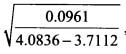 correct to four decimal places, hence Write the answer in standard form. (3 marks)
2. Two numbers p and q are such that p3 X q = 189. Find p and q. (3 marks)
3. A trader bought maize for Ksh 20 per kilogram and beans for Ksh 60 per kilogram. She mixed the maize and beans and sold the mixture at Ksh 48 per kilogram. If she made a 60% profit, determine the ratio maize to beans per kilogram in the mixture. (4 marks)
4.In the triangle ABC below, BC = 12 cm, A ABC = 80° and L ACB = 30°.
5.Calculate correct to 4 significant figures. the area of triangle ABC. (3 marks)
Given that the exterior angle of a regular hexagon is x. find the size of each interior angle of the hexagon. (2 marks)
6.Use logarithms to evaluate,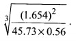 (4 marks)
7. A line L is perpendicular to the line 2⁄3x + 5⁄7 y = l . Given that L passes through (4,l l), find:
(a) gradient of L1 ( l mark)
(b) equation of L in the form y = mx + c, where m and c are constants. (2 marks)
gradient of L = 15/14
8. Convert 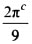 into degrees. (2 marks)
9. A garden is in the shape of a right angled triangle. The length of the shortest side is l7 m and the area of the garden is 346.8 ml. Calculate the length of the longest side of the garden. (3 marks)
10. The diagram below shows a region R bounded by three lines L1 L2 L3
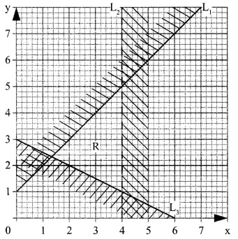
Form the three inequalities that satisfy the given region R. (3 marks)
11. Murimi and Naliaka had each 840 tree seedlings. Murimi planted equal number of seedlings per row in x rows while Naliaka planted equal number of seedlings in (x + 1) rows.
The number of tree seedlings planted by Murimi in each row were 4 more than those planted by Naliaka in each row. Calculate the number of seedlings Murimi planted in each row. (4 marks)
12. A Kenyan bank buys and sells foreign currencies as shown below:
A businessman on a trip to Kenya had £50 000 which he converted to Kenya shillings. While in Kenya, he spent 80% of the money and changed the balance to South African Rand.
Calculate, to the nearest Rand, the amount he obtained. (3 marks)
13. Use the mid ordinate rule with six strips to find the area bounded by the curve y =x2 + 1, the lines
x = -4 , x = 8 and the x-axis. (3 marks)
14. Given that 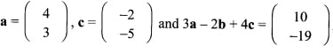 find b. (3 marks)
15. A triangle T With vertices A (2,4), B (6,2) and C (4,8) is mapped onto triangle T’ with vertices
A’(l0,0) , B'(8,—4) and C'(14,—2) by a rotation.
(a) On the grid provided draw triangle T and its image. (2 marks)
(b) Determine the centre and angle of rotation that maps T onto T’. (2 marks)
16. A construction company employs technicians and artisans. On a certain day 3 technicians and 2 artisans were hired and paid a total of Ksh 9000. On another day the firm hired 4 technicians and 1 artisan and paid a total of Ksh 9500‘ Calculate the cost of hiring 2 technicians and 5 artisans in a day. (3 marks)
Section II (50 marks)
Answer any five questions from this section in the spaces provided.
17. Two lines L1: 2y — 3x 6 = 0 and L2: 3y + x — 20 =
0 intersect at a point A.
(a) Find the coordinates of A. (3 marks)
(b) A third line L3 is perpendicular to L2 at point A. Find the equation of L3 in the form y = mx + c, Where m and c are constants. (3 marks)
(c) Another line L4 is parallel to L1 and passes through (—l,3). Find the x and y intercepts of L 4 (4 marks)
18. The masses, in kilograms, of patients who attended a clinic on a certain day were recorded follows.
38 52 46 48 60 59 62 73 49 54
49 41 57 58 69 72 60 58 42 41
79 62 58 67 54 60 65 61 48 47
69 59 70 52 63 58 59 49 51 44
67 49 51 58 54 59 39 59 54 52
(a) Starting with the class 35 — 39, make a frequency distribution table for the data. (2 marks)
(b) Calculate:
(i) the mean mass; (3 marks)
(ii)the median mass (3 marks)
(c) On the grid provided below draw a histogram to represent the data
19. A solid S is made up of a cylindrical part and a conical part. The height of the solid is 4.5 m. The common radius of the cylindrical part and the conical part is 0.9 m. The height of the conical part is 1.5 m.
(a). Calculate the volume. correct to 1 decimal place, of solid S.(4 marks)
(b). Calculate the total surface area of solid S. (4 marks)
A square base pillar of side 1.6 m has the same volume as solid S. Determine the height of the pillar, correct to 1 decimal place. (2 marks)
20. In the figure below (not drawn to scale), AB 11cm, BC = 8cm, AD = 3 cm, AC 5cm and A DAC is a right angle.
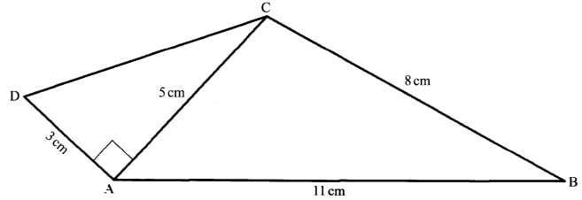
Calculate, correct to one decimal place:
(a) the length DC; (2 marks)
(b) the size of 4 ADC; (2 marks)
(0) the size of A ACB; (3 marks)
(d) the area of the quadrilateral ABCD. (3 marks)
21. The comer points A, B, C and D of a ranch are such that B is 8km directly East of A and C is 6km from B on a bearing of 30°. D is 7km from C on a bearing of 300°.
(a) Using a scale of 1cm to represent 1km, draw a diagram to show the positions of A, B, C and D. (4 marks)
(b) Use the scale drawing to determine:
(i) the bearing of A from D; (1 mark)
(ii) the distance BD in kilometres. (2 marks)
22. (a) Given that A = 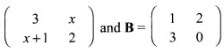 find values of x for which AB is a singular matrix. (4 marks)
(b) Mambo bought 3 exercise books and 5 pens for a total of Ksh 165. 1f Mambo had bought 2 exercise books and 4 pens, he would have spent Ksh 45 less. Taking x to represent the price of an exercise book and y to represent the price of a pen:
(i) Form two equations to represent the above information. (1 mark)
(ii) Use matrix method to find the price of an exercise book and that of a pen. (3 marks)
(iii) A teacher of a class of 36 students bought 2 exercise books and 1 pen for each student. Calculate the total amount of money the teacher paid for the books and pens. (2 marks)
23. An institution intended to buy a certain number of chairs for Ksh 16 200. The supplier agreed to offer a discount of Ksh 60 per chair which enabled the institution to get 3 more chairs.
Taking x as the originally intended number of chairs,
(a) Write an expressions in terms of x for:
(i) original price per chair; (1 mark)
(ii) price per chair after discount. (1 mark)
(b) Determine:
(i) the number of chairs the institution originally intended to buy; (4 marks)
(ii) price per chair after discount; (2 marks)
(iii) the amount of money the institution would have saved per chair if it bought the intended number of chairs at a discount of 15%. (2 marks)
24. The equation of a curve is given as y = 2x3 —9/2 x2 — 15x + 3.
(a) Find:
(i) the value of y when x = 2; (2 marks)
(ii) the equation of the tangent to the curve at x = 2. (4 marks)
(b) Determine the turning points of the curve. (4 marks)
= √ 0.2581
= 0.5080
Standard form = 5.080 x 10-1
189 = 3 x 3 x 3 x 7
= 33 x 7
= p3 x q = 33 x 7
p = 3, q = 7
Let the number of kg of maize be m and number of kg of beans be b
Buying price = 20m + 60b
Selling price = 48(m+b)
60 = 48(m + b) - (20m + 60b) 100 20m + 60b
0.6= 28m - 12b/ 20m + 60b
12m + 36b = 28m — 12b
16m = 48b
m/b = 3/1
Ratio m:b = 3:1
∠=BAC —— 180° —(80° + 30°) = 70°
AC/ sin 80" 12/sin 70‘
= 12.58 cm
Area of ∠ABC =1/2 x 12x12.58sin 30°
= 6x 12.58 x 0.5
= 37.74 cm2
No. of sides of a hexagon = 6
Each exterior angle, x — 360/6
= 60°
Size of each exterior angle
= 180° - 60°
= 120°
6.Use logarithms to evaluate, (4 marks)
No. Log
(1.654)2 0.2185 x 2
0.4370
45.73 1.6602
0.56 1.7482 or (-0.2518)
1.4084
1.0286 or (—0.9714)x1/3 1.6762 or — 0.3238
= 0.4745
(a) gradient of L; ( l mark)
2x/3 + 5y/7 = 1
14x + 15y = 21
—14/15 + 21/15
(b) Equation of L
y — 11/x-4 = 15/14
y=15/4x+47/7
8. Convert 2πC/9 into degrees. (2 marks)
πc=180° 2πc/9 180x 2π/9 = 40°
Area = 1/2 x b x h
Let h be the other shorter side
346.8 = 1/2 x 17 x h
h = 40.8
longest side = √ 17+40.8 =�.64 =44.2m 10. The diagram below shows a region R bounded by three lines L1 L2 L3 L1:y - x ≤ 1 L2:x < 4 L3:x+2y ≥ 6 Form the three inequalities that satisfy the given region R. (3 marks) 11. Murimi and Naliaka had each 840 tree seedlings. Murimi planted equal number of seedlings per row in x rows while Naliaka planted equal number of seedlings in (x + 1) rows. The number of tree seedlings planted by Murimi in each row were 4 more than those planted by Naliaka in each row. Calculate the number of seedlings Murimi planted in each row. (4 marks) 840/x - 840/x + 1 = 4 4x2 + 4 — 840 = 0 x2 + x — 210 = 0 (x + 15) (x —14) = 0 = 14 No of seedling planted by Murimi per row — 840/14 = 60 12. £500 000 to Ksh = 50 000 x 130.10 = Ksh 6 505 000 Balance after expenditure 20 x 6 505 000 Ksh 1 301 000 Amount in Rands 1 301 000/9.58 = R 135 804 13. Use the mid ordinate rule with six strips to find the area bounded by the curve y =x2 + 1, the lines x = -4 , x = 8 and the x-axis. (3 marks) Mid ordinates are x -3 -1 1 3 5 7 y 10 2 2 10 26 50
=�.64
=44.2m
L1:y - x ≤ 1
L2:x < 4
L3:x+2y ≥ 6
840/x - 840/x + 1 = 4
4x2 + 4 — 840 = 0 x2 + x — 210 = 0 (x + 15) (x —14) = 0 = 14
No of seedling planted by Murimi per row — 840/14
= 60
12.
£500 000 to Ksh = 50 000 x 130.10
= Ksh 6 505 000
Balance after expenditure
20 x 6 505 000
Ksh 1 301 000
Amount in Rands 1 301 000/9.58
= R 135 804
Mid ordinates are
=200
14. Given that find b. (3 marks)
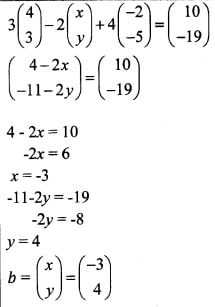
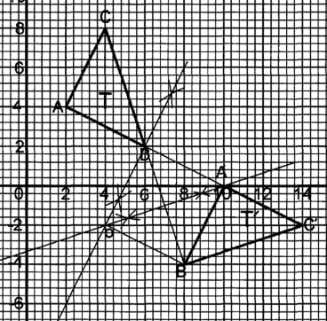 (b) Determine the centre and angle of rotation that maps T onto T’. (2 marks)
Centre of rotation = (4,-2)
Angle of rotation -90
3t + 2a = 9000
4t + a = 9500 a = 9500 — 4t
3t + 2(9500 — 4t) = 9000
-5t = -10000
t = 2000
a = 9500 — 8000 =, 1500
Cost of hiring 2 technicians 5 artisans
= 2 x 2000 + 5 x 1500 = Ksh 11500
17.
(a)
2y - 3x = 6
3y + x = 202y - 3x = 6
9y + 3x = 60 11y = 60
y = 6
x = 20 - 18
= 2
(b)
L2 : 3y = -x + 20
y = - ⅓x + 20
Gradient of perpendicular = 3
y - 6 = 3x - 2
y = 3x - 6 + 6
y = 3x
(c)
Gradient of L4 = gradient of L,
= 3 2
y - 3 = 3x + 1 2
2y - 6 = 3x + 3
2y - 3x = 9
When x = 0, y = 4.5
When y = 0, x = -3
18.
(b) (i) Mean= 2 x 37 + 4 x 42 + 8 x 47 + 9 x 52 + 11 x 57 + 7 x 62 + 5 x 67 + 3 x 72 + 1 x 77/50
2775/50
= 55.5 kg
(ii) C.fs 2,6,14,23,34,41,46,49,50
Median = 54.5 + 2/11 x 5
= 55.4 kg
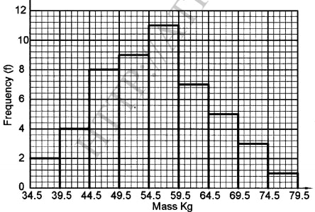 19. A solid S is made up of a cylindrical part and a conical part. The height of the solid is 4.5 m. The common radius of the cylindrical part and the conical part is 0.9 m. The height of the conical part is 1.5 m.
Volume of Solid S
Volume of conical part
1/3π X (0.9)2 x 1.5
= 1.3m2
Volume of cylindrical part
= π x (0.9)2 x 3
= 7.6m3
Volume of pillar = 1.3 + 7.6
= 8.9m3
(b). Calculate the total surface area of solid S.
S.A. of cylindrical part
Slant lengh of a conical flask
√ (1.5)2
+ (0.9)2
=19.5m2
S.A. of Solid S = 19.5m2 + 4.8m2
=24.3m2
(c) A square base pillar of side 1.6 m has the same volume as solid S. Determine the height of the pillar, correct to 1 decimal place. (2 marks)
(1.6)2 x L = 8.9m3
h = 3.5m
√32 + 52
tan-1 (c) the size of ACB; (3 marks) 112 = 52+ 82 - 2 x 5 x 8 Cos C cos C = 52 + 82 - 112/2 x 5 x 8 = -0.4 ∠ ACB = Cos-1(—0.4) ∠ ACB = 113.6° (d) the area of the quadrilateral ABCD. (3 marks) Area of ABCD = Area of ACD + Area of ABC = 1/2 x 3 x 5 + 1/2 x 5 x 8 Sin 113.6 = 25.8cm2 21. The comer points A, B, C and D of a ranch are such that B is 8km directly East of A and C is 6km from B on a bearing of 30°. D is 7km from C on a bearing of 300°. (a) Using a scale of 1cm to represent 1km, draw a diagram to show the positions of A, B, C and D. (4 marks) (b) Use the scale drawing to determine: (i) the bearing of A from D; (1 mark) 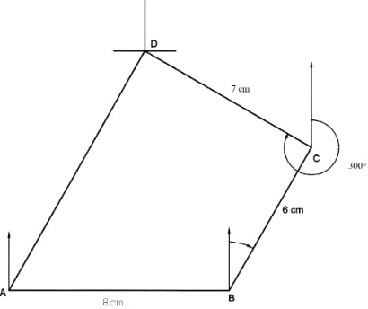 (a) Location of B B1 Location of C B1 Location of D B1 Complete quadrilateral ABCD B1 (b) Bearing of A from D = 180 + 30 = 2010 B1 (c) Distance BD = 9.2 cm x 1 km M1 = 9.2 km + 0.1 A1 (d) Perimeter: AD = 10.0 +0.l km Perimeter = 10 + 8 + 6 + 7 = 31 km 22. (a) Given that A = find values of x for which AB is a singular matrix. (4 marks) 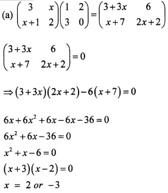 (b) Mambo bought 3 exercise books and 5 pens for a total of Ksh 165. 1f Mambo had bought 2 exercise books and 4 pens, he would have spent Ksh 45 less. Taking x to represent the price of an exercise book and y to represent the price of a pen: (i) Form two equations to represent the above information. (1 mark) (ii) Use matrix method to find the price of an exercise book and that of a pen. (3 marks) (iii) A teacher of a class of 36 students bought 2 exercise books and 1 pen for each student. Calculate the total amount of money the teacher paid for the books and pens. (2 marks) 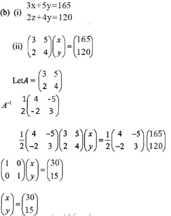 Cost of an exercise book = Ksh. 30 Cost of a pen — Ksh. 15 (iii) 2x 36 x 30 + 36 x 15 = Ksh 2700 23. (a) (i) Original price = 16200 x (ii) Price after discount = 16200 x + 3 (b)(i)16200 - 60 = 16200 x x + 3 16200 - 60x = 16200 x x + 3 (16200 - 60x)(x + 3) = 16200x60x2 + 180x - 48600 = 0 x2 + 3x - 810 = 0 (x + 30)(x - 27) = 0 x = 27 (ii)1620027 + 3= Ksh 540 (iii) 16200 x 15 27 100 = Ksh 90 24. (a) (i) When x = 2 y = 2(2)3 —9/2 (2)2 — 15(2) + 3= - 29 (ii) dy = 6x2 - 9x - 15dx at x = 2dy = - 9dx Equation of tangent:y + 29 = -9 x - 2y = -9x + 18 - 29y = -9x - 11 (b)dy = 6x2 - 9x - 15dx At turning point6x2 - 9x - 15 = 0 6x2 + 6x - 15x - 15 = 0(6x - 15)(x + 1) = 0 x = -1, y = 11.5turning point = (-1, 11.5) at x = 2.5, y = -313⁄8 turning point = (2.5, -313⁄8)
112 = 52+ 82 - 2 x 5 x 8 Cos C
cos C = 52 + 82 - 112/2 x 5 x 8
= -0.4
∠ ACB = Cos-1(—0.4)
∠ ACB = 113.6°
Area of ABCD = Area of ACD + Area of ABC
= 1/2 x 3 x 5 + 1/2 x 5 x 8 Sin 113.6
= 25.8cm2
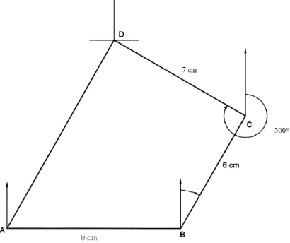
(a) Location of B B1
Location of C B1
Location of D B1
Complete quadrilateral ABCD B1
(b) Bearing of A from D = 180 + 30 = 2010 B1
(c) Distance BD = 9.2 cm x 1 km M1
= 9.2 km + 0.1 A1
(d) Perimeter:
AD = 10.0 +0.l km
Perimeter = 10 + 8 + 6 + 7
= 31 km
22. (a) Given that A = find values of x for which AB is a singular matrix. (4 marks)
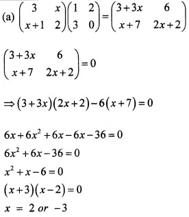
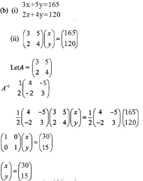 Cost of an exercise book = Ksh. 30 Cost of a pen — Ksh. 15
(iii) 2x 36 x 30 + 36 x 15
= Ksh 2700
23.
(i) Original price =
16200 x
(ii) Price after discount =
16200 x + 3
(i)
16200 - 60 = 16200 x x + 3
16200 - 60x = 16200 x x + 3
(16200 - 60x)(x + 3) = 16200x
60x2 + 180x - 48600 = 0
x2 + 3x - 810 = 0
(x + 30)(x - 27) = 0
x = 27
(ii)
1620027 + 3
= Ksh 540
(iii)
16200 x 15 27 100
= Ksh 90
24. (a)
(i) When x = 2
y = 2(2)3 —9/2 (2)2 — 15(2) + 3
= - 29
dy = 6x2 - 9x - 15dx
at x = 2
dy = - 9dx
Equation of tangent:
y + 29 = -9 x - 2
y = -9x + 18 - 29
y = -9x - 11
At turning point
6x2 - 9x - 15 = 0
6x2 + 6x - 15x - 15 = 0
(6x - 15)(x + 1) = 0
x = -1, y = 11.5
turning point = (-1, 11.5)
at x = 2.5, y = -313⁄8
turning point = (2.5, -313⁄8)